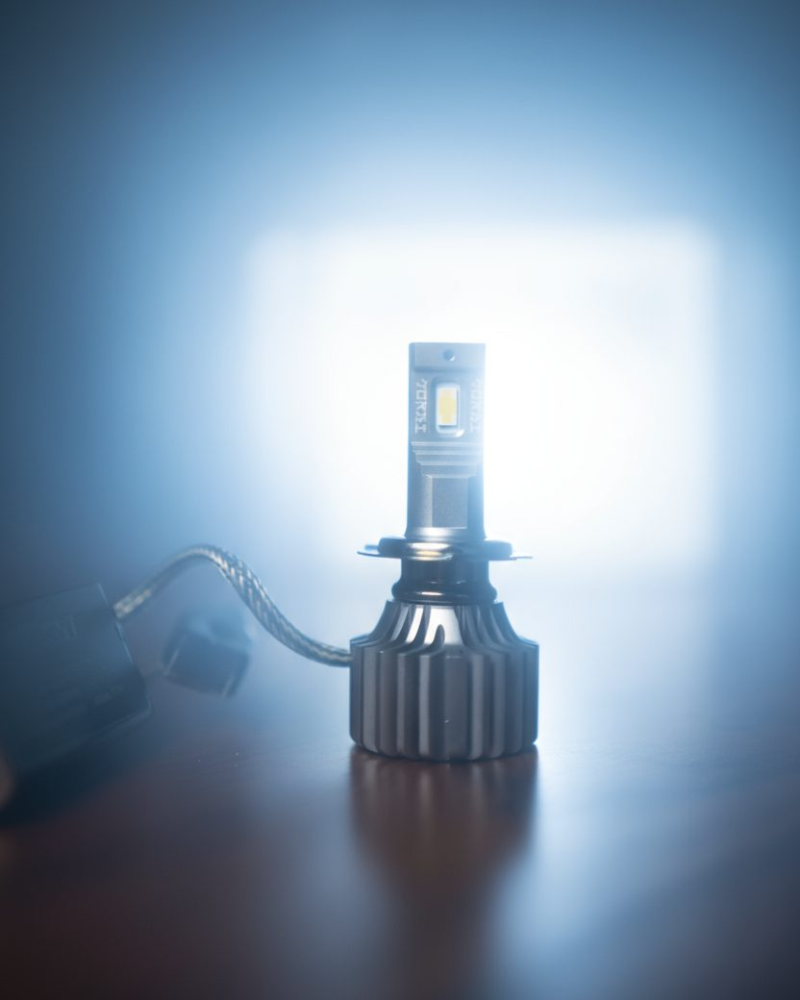

KORBI brand book
How KORBI looks and speaks on every channel: website, packaging, posts, ads, emails and WhatsApp. It's built from KORBI's own materials (logo, sleeve, film, korbi.in) and the website direction the founders approved. Anything not covered here is asked of Tushar and Shyam, never guessed.
一Who KORBI is
The Light Samurai. KORBI is named after the samurai who studied light for right-hand-drive roads. The brand carries that story: Japanese discipline and precision, brought to Indian night driving.
Vision
To redefine night driving in India with advanced, reliable and road-safe lighting.
Promise
India's first LED bulb with a right-hand-drive cutoff. It lights your path without blinding oncoming traffic.
Three pillars
| Pillar | Meaning |
|---|---|
| Designed in Japan | Durability, precision and technology at the core, with no compromises. |
| Developed for India | RHD cutoff, made for the domestic market and for Indian weather. |
| Peace of mind | Two-year warranty and IP68, built to last. |
Ethos line
"Quality and durability come before quantity."
二Logo
The KORBI wordmark, with the red sun in the O, and the line "THE LIGHT SAMURAI". Use the supplied files only. Never redraw, stretch, recolour or add effects.
Rules
- Minimum width 100px on screen. Keep clear space equal to the height of the O on every side.
- Dark logo on paper or white; white logo on ink or on dark photos.
- The red in the logo is the logo's own red (#E4262B). Don't swap it for the page accent.
三Colour
Quiet paper and ink, with one red seal. Red is used once per screen: the 光 seal, the key mark or the active step. Never for large areas or body text.
四Type
See the road. Not the glare.
Zen Kaku Gothic New, Light 300 for headlines, 300/400 for body, 500 for labels. Labels are small capitals with wide spacing (0.2–0.3em).
4300K · ₹11,500 · 光
Shippori Mincho for section titles, prices, product numbers and the 光 seal.
Packaging uses Gilroy and Helvetica Neue (in the brand folder). The web pairing above was chosen and approved for the site; Gilroy can be added on the web once its licence is confirmed.
五Layout and motifs
- Shoji grid: thin 1px rules divide the page into calm panels, like paper screens. One idea per panel.
- The 光 seal ("light"), vertical, in seal red. One per page, top of the story.
- The bulb illustration from the approved homepage. Line-drawn, warm glow, no shadows.
- The samurai artwork (red sun over misty mountains), full width, for the story only.
- KORBI in Indian scripts, the band from the packaging: "Created for the Indian domestic market".
- Numbered steps in Japanese numerals (一 二 三) for any sequence: choose holder, then colour.
六Photography
Dark, low-key, one light source: the bulb itself. Warm wood surfaces, the box or the red sun soft in the background. Real hands, never stock models.




- No bright white studio backgrounds, no neon, no "racing" effects.
- Never stretch or squash a photo: crop to the frame first.
七Voice
Calm, precise, confident. Speak like a craftsman, not a salesman: say what the bulb does, plainly, and let the facts carry it.
Do
- Short sentences. One idea each.
- Lead with the benefit to the driver: see the road, don't blind others.
- Use real numbers only: 8,400 lumens, 70W, IP68, 30,000 hours.
- Say "a pair" and "holder type". Use "4300K Warm White" and "6000K Cool White".
- Respect other drivers: safety is part of the story.
Don't
- No hype words: "insane", "ultra", "beast", "blinding".
- No exclamation marks in brand copy.
- Never claim "brightest in India" or any comparison we can't prove.
- Never say "plug and play, fit it yourself": fitting is by a certified technician.
- No made-up reviews, ratings or numbers.
Approved lines
| Hero | See the road. Not the glare. |
| Strapline | Designed in Japan. Made for India. |
| Promise | India's first LED bulb with a right-hand-drive cutoff. |
| Legend | KORBI, the Japanese samurai of light. |
| Ethos | Quality and durability come before quantity. |
八Product facts (the only claims we make)
Source: korbi.in, 9 Oct 2026. Change a fact here first, then everywhere else.
| Fact | Value |
|---|---|
| Products | Road LED Bulbs · 4300K Warm White (all weather) and 6000K Cool White (clear sky), sold as a pair |
| Price | ₹11,500 a pair; H4 ₹12,500. Taxes included. |
| Holder types | H1, H4, H7, H8, H11, HB3, HIR2, 9005, 9012 |
| Light | 8,400 lumens; LED flip chip; high, low and fog beam |
| Power | 70W input (62W nominal); 12V nominal; DC 9–16V |
| Build | Copper heat sink; smart driver; IP68 |
| Life | 30,000 hours |
| Warranty | 1 year + 1 year on online registration |
| Size | Bulb 75 × 37 mm, 50 g · Box 230 × 145 × 80 mm, 550 g |
| In the box | A pair of bulbs on the ballast, fitting tool, zip ties, warranty card, stickers |
| Help | +91 96677 76763 · help@korbi.in |
To confirm with KORBI: (1) korbi.in lists the cool white as "6500 Kelvin" in its photometrics but sells it as 6000K; (2) the ballast label reads 5.83A, while the spec sheet says 5.19A working current.